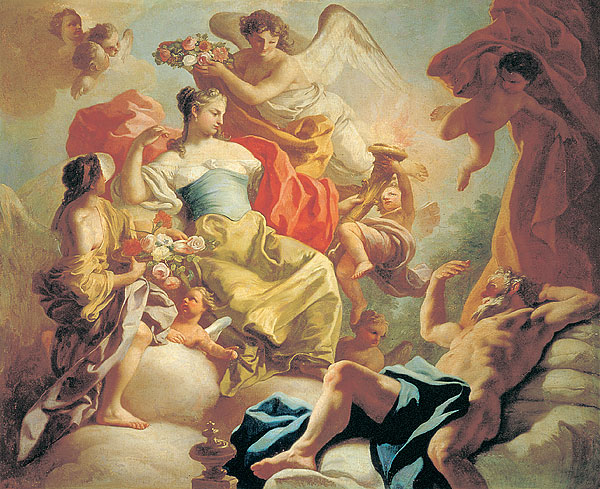
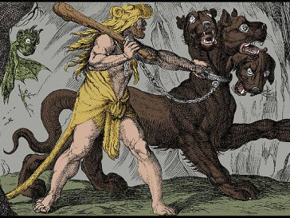
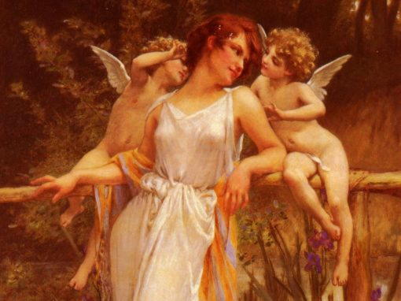
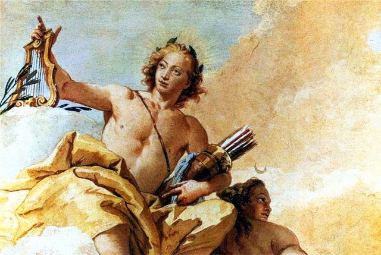

Аврора – грецька Богиня ранішньої зорі. Древні греки іменували Аврору рум'яною зорею, рожевоперстою богинею Еос.

Аїд – грецький Бог царства мертвих, а також само царство. Син Кроноса, або Сатурну і Реї, брат Зевса.

Амур – грецький Бог кохання, супутник і помічник Афродіти, уособлення любовного потягу.

Аполлон – грецький Бог-стріловержець, Бог передбачень і оракулів, світлоносний заступник мистецтв.